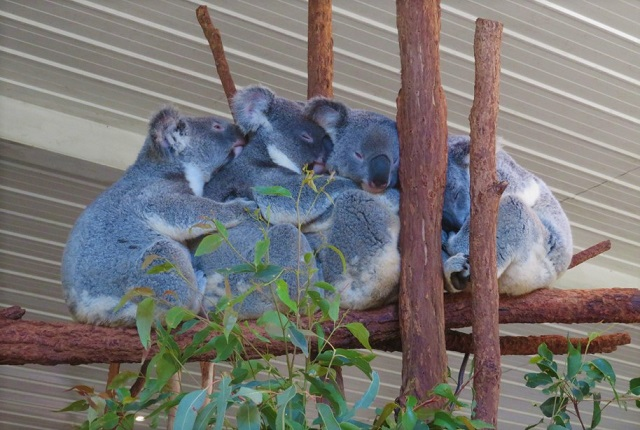

A koalák aszociális állatok, és naponta mindössze 15 percet fordítanak szociális viselkedésre. Viktóriában az otthoni körzetek kicsik és kiterjedt átfedésük van, míg Queensland központjában nagyobbak és kevésbé fedik át egymást. Úgy tűnik, hogy a koala társadalma "lakókból" és "tranziensekből" áll, az előbbiek többnyire felnőtt nőstények, az utóbbiak pedig férfiak. A rezidens hímek territoriálisnak tűnnek, és nagyobb testméretükkel uralják a többieket. Az alfahímek hajlamosak a szaporodó nőstények közelében kialakítani területeiket, míg a fiatalabb hímek alárendeltek, amíg fel nem érnek és el nem érik a teljes méretet.
Felnőtt hímek időnként kimerészkednek otthoni körzetükön kívülre; amikor ezt teszik, a dominánsak megtartják státusukat. Amikor egy hím belép egy új fába, megjelöli azt úgy, hogy mellmirigyét a törzshöz vagy egy ághoz dörzsöli; hímeknél időnként megfigyelték, hogy vizeletet csepegtetnek a törzsre. Ez az illatjelző viselkedés valószínűleg kommunikációs célt szolgál, és az egyénekről ismert, hogy megszagolják a fa tövét, mielőtt felmásznak. Az illatjelölés gyakori az agresszív találkozások során. A mellkasi mirigyváladék összetett kémiai keverék – egy elemzés során körülbelül 40 vegyületet azonosítottak –, amelyek összetétele és koncentrációja az évszaktól és az egyén életkorától függően változik.
A felnőtt hímek hangos fújtatókkal kommunikálnak – mély hangok, amelyek horkolásszerű belélegzésből és rezonáns kilégzésből állnak, amelyek morgáshoz hasonlóak. Úgy gondolják, hogy ezeket a hangokat a koalákban található egyedi hangszervek generálják. Alacsony frekvenciájuk miatt ezek a fújtatók messzire képesek eljutni a levegőn és a növényzeten keresztül. A koalák az év bármely szakában bömbölhetnek, különösen a szaporodási időszakban , amikor a nőstények vonzására és esetleg más hímek megfélemlítésére szolgál. Arra is bömbölnek, hogy jelezzék jelenlétüket szomszédaiknak, amikor új fára lépnek. Ezek a hangok jelzik a hím tényleges testméretét, valamint eltúlozzák azt; a nőstények jobban odafigyelnek a nagyobb hímektől származó fújtatókra.
A nőstény koalák bömbölnek, bár halkabban, amellett, hogy vicsorognak, jajgatnak és sikoltoznak. Ezek a hívások vészhelyzetben és védekező fenyegetéskor jönnek létre.Fiatal koalák nyikorognak, ha bajban vannak. Ahogy öregszenek, a nyikorgás „nyikorgássá” fejlődik, amely mind a szorongás, mind az agresszió kimutatása során keletkezik. Amikor egy másik egyed átmászik rajta, a koala csukott szájjal halkan morog. A koalák számos arckifejezést végeznek. Vigyázva, jajveszékelve vagy rikoltozva az állat a felső ajkát begörbíti, és fülét előremutatja. Sikoltozás közben az ajkak visszahúzódnak, a fülek pedig hátrahúzódnak. A nőstények előrehúzzák az ajkukat, és felemeli a fülüket, ha izgatottak.
Az agonisztikus viselkedés jellemzően az egyének közötti civakodásból áll, akik átmásznak vagy elhaladnak egymáson. Ez időnként harapással jár. Az idegen hímek birkózhatnak, üldözhetik és haraphatják egymást. Szélsőséges helyzetekben egy hím megpróbálhatja kiszorítani egy kisebb riválisát a fáról. Ez azt jelenti, hogy a nagyobb agresszor felmászik és megpróbálja sarokba szorítani az áldozatot, aki megpróbál elrohanni mellette és lemászni, vagy egy ág végére mozdulni. Az agresszor úgy támad, hogy megragadja a célpontot a vállánál, és többször megharapja. Miután a gyengébb egyedet elűzték, a győztes bömböl és megjelöli a fát. A vemhes és szoptató nőstények különösen agresszívek, és megtámadják azokat az egyedeket, akik túl közel jönnek. Általában azonban a koalák általában elkerülik az energiapazarló agresszív viselkedést.